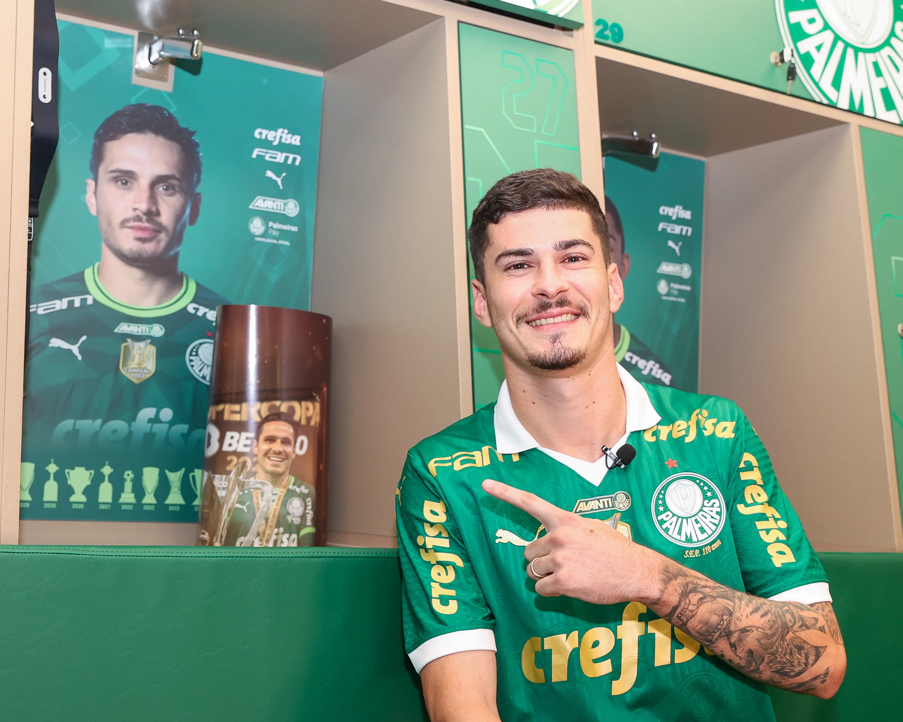

Pórem o jogador quer permanecer no clube para essa temporada
Palmeiras pretende empresta-lo pois entende que vai ter muita competividade no elenco do que teve ano passado, que o meia já não atou por tantos minutos.Pórem o jogador quer permanecer no clube e brigar por uma vaga entre os titulares, e ele tem futebol para isso.
O Vitória é um dos clubes interessados no meia pois o Palmeiras vê que um emprestimo pode ser bom para ele Voltar mais preparado assim como fez Raphael Veiga a uns anos atrás